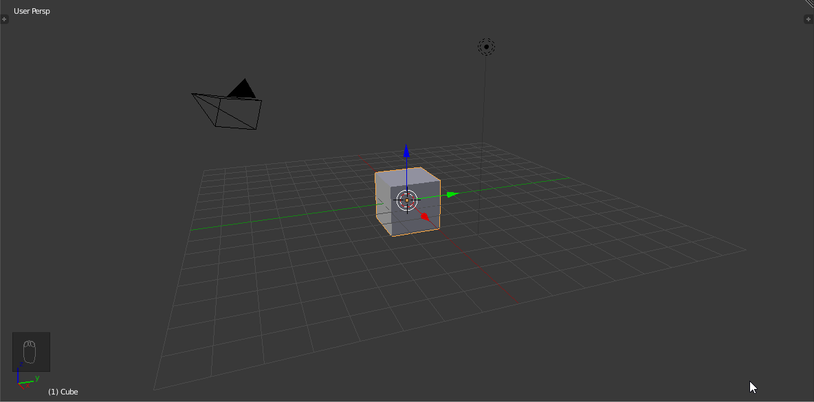
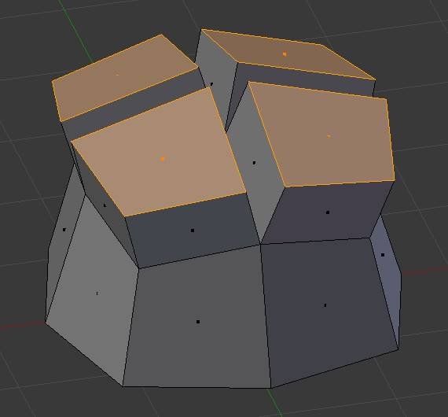
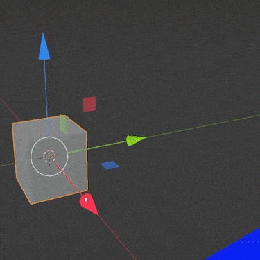
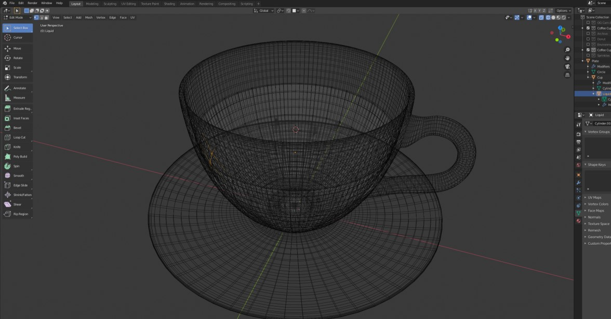

-
 Work Queue
Work Queue
-
My Ticket
Create a Ticket for your problem
Your Problem
Description
Attachment
Image files such as jpg, jpeg, png and svg etc...
Drop your image here or click to upload
Image files such as jpg, jpeg, png and svg etc...
Drop your image here or click to upload
01:00:00
How do you pan the camera view in Blender?
Middle mouse button
Left mouse button
Right mouse button
Spacebar
Which file format is commonly used to save Blender projects?
.blend
.jpg
.mp4
.docx
What is the default shape that appears when you start a new project in Blender?
Sphere
Cube
Cylinder
Cone
Which key do you press to switch to Edit Mode in Blender?

Tab
Shift
Ctrl
Alt
What is the purpose of the 'Extrude' tool in Blender?
To rotate objects
To scale objects
To create new geometry by extending faces
To delete objects
According to the image below, which viewport shading mode is currently active in Blender?

Wireframe
Solid
Material Preview
Rendered
Which shortcut key is used to render an image in Blender?

F12
F1
F5
F10
What is the 'Modifier' in Blender used for?

To change the color of objects
To apply non-destructive changes to objects
To save the project
To import textures
Which tool is used to move objects in Blender?
Scale tool
Rotate tool
Grab tool
Extrude tool
What does the 'Subdivision Surface' modifier do?

Adds more detail to the mesh by subdividing faces
Changes the color of the surface
Deletes faces from the mesh
Combines multiple objects into one
How do you add a new object to the scene in Blender?

Press Shift + A
Press Ctrl + A
Press Alt + A
Press Tab
What is the purpose of the 'Loop Cut' tool?

To cut the object in half
To add a loop of edges to the mesh
To delete a loop of edges
To rotate the object
Which panel allows you to change the material properties of an object?

Render panel
Material panel
Texture panel
World panel
What is the shortcut key to switch to Wireframe view?
Z
X
C
V
How do you scale an object uniformly in Blender?

Press S and drag the mouse
Press G and drag the mouse
Press R and drag the mouse
Press E and drag the mouse
What is the purpose of the 'Mirror' modifier?

To create a mirrored copy of the object
To change the object's color
To rotate the object
To delete the object
Which key do you press to undo an action in Blender?
Ctrl + Z
Ctrl + Y
Ctrl + S
Ctrl + A
What does the 'Bevel' tool do?

Rounds off the edges of the mesh
Deletes the edges of the mesh
Rotates the mesh
Scales the mesh
How do you join two objects into one in Blender?

Press Ctrl + J
Press Ctrl + G
Press Ctrl + M
Press Ctrl + P
Which workspace is used for animating objects in Blender?

Modeling
Sculpting
Animation
Shading
Need help?